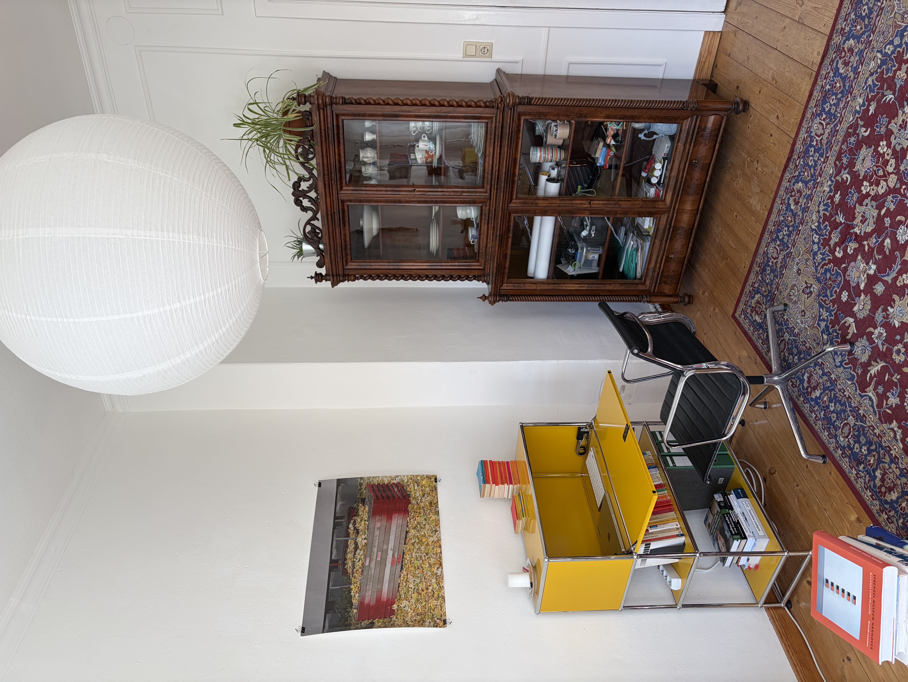

Informationen
Designarchiv - Nikolai Gerbers ist Ihre Anlaufstelle für hochwertige Second-Hand-Designmöbel und -objekte im Raum Bremen. Ich kuratiere ein sorgfältig ausgewähltes Sortiment zeitloser Stücke renommierter Hersteller wie Vitra, Thonet, USM Haller und weiterer Ikonen der Designgeschichte. Jedes Möbelstück in dem Archiv erzählt eine Geschichte – von durchdachter Formgebung, hochwertiger Verarbeitung und nachhaltigem Konsum. Wer bei mir kauft, entscheidet sich nicht nur für gutes Design, sondern auch für eine bewusste Alternative zum Neukauf.
